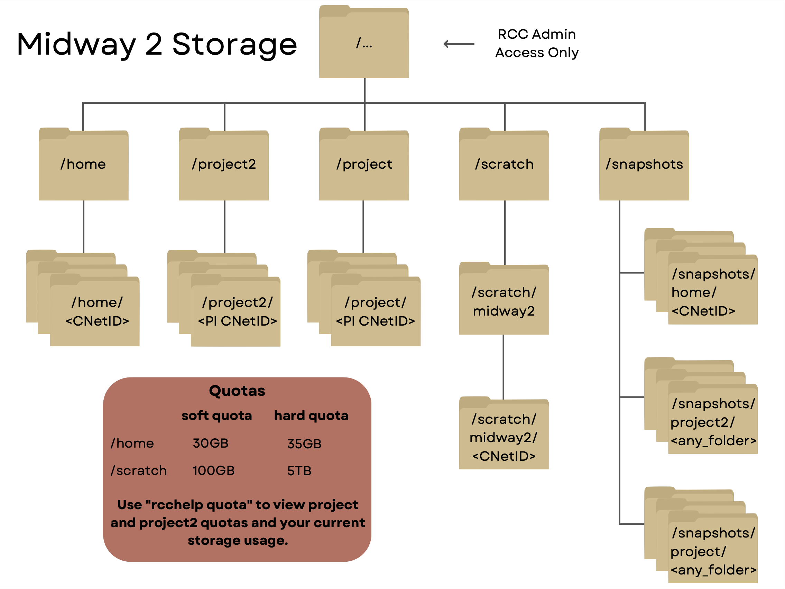
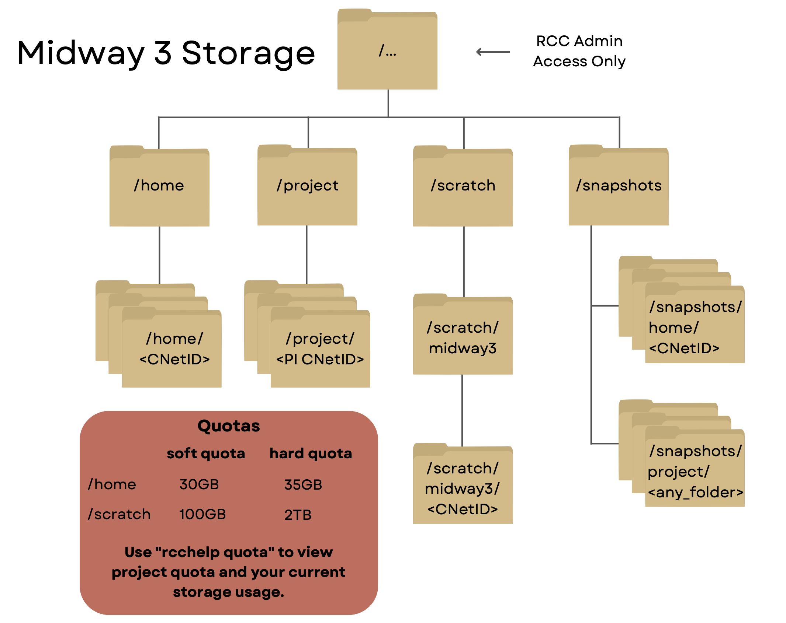

Data Storage
RCC provides a high-performance GPFS shared file system which is used for users’ home directories, shared project spaces, and high-throughput scratch space. All compute nodes are diskless.
In addition to high-performance GPFS file system, RCC also offers Cost-effective Data Storage (CDS) through Cluster Partnership Program for long-term data storage. CDS is only available from login nodes and is meant to be used as a storage for less frequently used data. Before performing any computation on the data stored on CDS, it first needs to be copied to the GPFS file system.


Quotas
The amount of data that can be stored in home directories, project directories, and shared scratch directories is controlled by quota. RCC enforces hard and soft limits on quotas. A soft quota can be exceeded for a short period of time called a grace period. The hard quota cannot be exceeded under any circumstances.
Additional storage is available through the Cluster Partnership Program, a Research I Allocation, Research II Allocation or, in certain circumstances, a Special Allocation.
Checking available space
To check your current quotas use rcchelp quota. Typical output may look like this
---------------------------------------------------------------------------
fileset type used quota limit grace
---------------- ---------------- ---------- ---------- ---------- --------
home blocks (user) 8.77G 30.00G 35.00G none
files (user) 157865 300000 1000000 none
scratch blocks (user) 16.07G 100.00G 5.00T none
files (user) 193028 10000000 20000000 none
---------------- ---------------- ---------- ---------- ---------- --------
>>> Capacity Filesystem: project2 (GPFS)
---------------- ---------------- ---------- ---------- ---------- --------
rcc blocks (group) 259.10T 500.00T 501.00T none
files (group) 45825436 384500000 385500000 none
---------------- ---------------- ---------- ---------- ---------- --------
---------------------------------------------------------------------------
| Field | Meaning |
|---|---|
| fileset | File set or file system where this quota is valid. |
| type | Type of quota. Blocks are the amount of consumed disk space. Files are the number of files in a directory. Blocks or files quotas can be set at the user or group level. |
| used | The amount of disk space consumed or the number of files in the specified location. |
| quota | The soft quota (disk space or file count) associated with the specified location. It is possible for usage to exceed the soft quota for the grace period or up to the hard limit. |
| limit | The hard quota (disk space or file count) associated with the specified location. When your usage exceeds this limit, you will NOT be able to write to that filesystem. |
| grace | The amount of time remaining that the soft quota can be exceeded. None means that the quota is not exceeded. After a soft quota has been exceeded for longer than the grace period, it will no longer be possible to create new files. |
Persistent Space
Persistent space is appropriate for long term storage. The two locations for persistent space are the home and project directories. The home and project directories have both file system Snapshots and tape backup for data protection.
Home Directories
Every RCC user has a home directory located at /home/<CNetID>. The HOME environment variable points to this location. The home directory is accessible from all RCC compute systems and is generally used for storing frequently used items such as source code, binaries, and scripts. By default, a home directory is only accessible by its owner (mode 0700) and is suitable for storing files which do not need to be shared with others.
Project Directories
All RCC PI Groups are allocated a Project Directory located at /project/<PI CNetID> or
/project2/<PI CNetID> where
The default permissions for files
and directories created in a project directory allow group read/write with the
group sticky bit set (mode 2770). The group ownership is set to the PI group.
Scratch Space
Shared Scratch Space
High performance shared scratch space can be accessed using the SCRATCH environment variable. This scratch space is intended to be used for reading or writing data required by jobs running on the cluster. If a user is over quota, s/he can use scratch space as a temporary location to hold files (and/or compress them for archival purposes) but as scratch space is neither snapshotted nor backed up, it should always be viewed as temporary.
NOTE: It is the responsibility of the user to ensure any important data in scratch space is moved to persistent storage. Scratch space is meant to be used for temporary, short-term storage only.
The default permissions for scratch space allow access only by its owner (mode 0700). The standard quota
for the high performance scratch directory is 5 TB with a 100GB soft limit. The grace period that the soft limit may be
exceeded is 30 days for shared scratch space.
Data Recovery and Backups
Snapshots
Automated snapshots of home and project directories are available in case of accidental file deletion or other problems. Currently snapshots are available for these time periods:
| Directory | Snapshot kept | Snapshot Path |
|---|---|---|
$HOME |
7 daily and 2 weekly | /snapshots/home/SNAPSHOT/home/CNetID |
/project/<any_folder> |
7 daily and 2 weekly | /snapshots/project/SNAPSHOT/project/<any_folder> |
/project2/<any_folder> |
7 daily and 4 weekly | /snapshots/project2/SNAPSHOT/project2/<any_folder> |
The snapshots for the home and project directories are available from the login nodes. The {SNAPSHOT} refers to the time of the backup, e.g. daily-YYYY-MM-DD.05h30 or weekly-YYYY-MM-DD.05h30. To view the available snapshots of the home directory, for example, use the command ls /snapshots/home
To restore a file from a snapshot, simply copy the file to where you want it with either cp or rsync.